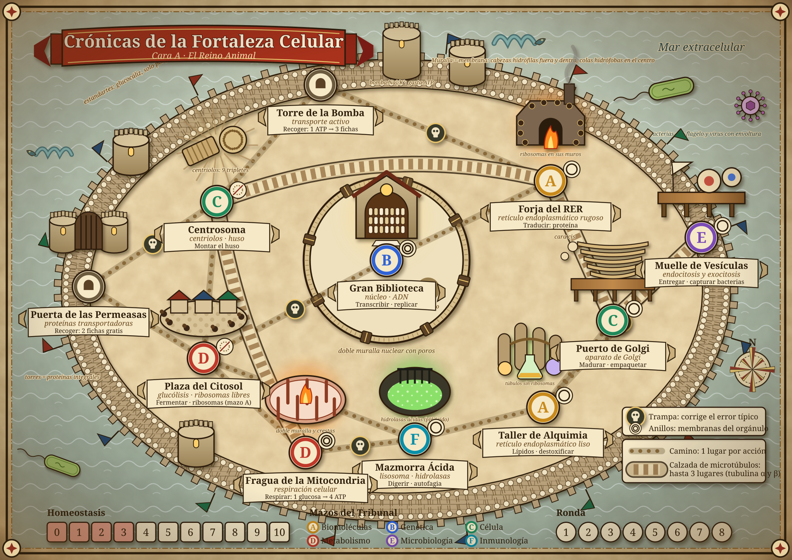
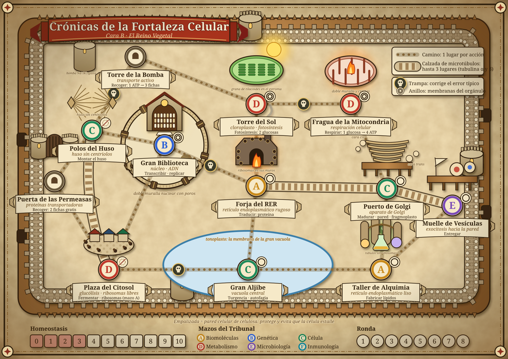

Dos caras: la célula animal y la célula vegetal. Imprime cada una en A3 apaisado, sin márgenes, o en dos A4 y únelas con cinta. Si las pegas espalda con espalda sobre cartón tendrás un tablero de dos caras.
← Volver Descargar cara A (SVG) Descargar cara B (SVG)
Esta web registra visitas de forma anónima, sin cookies ni datos personales.

